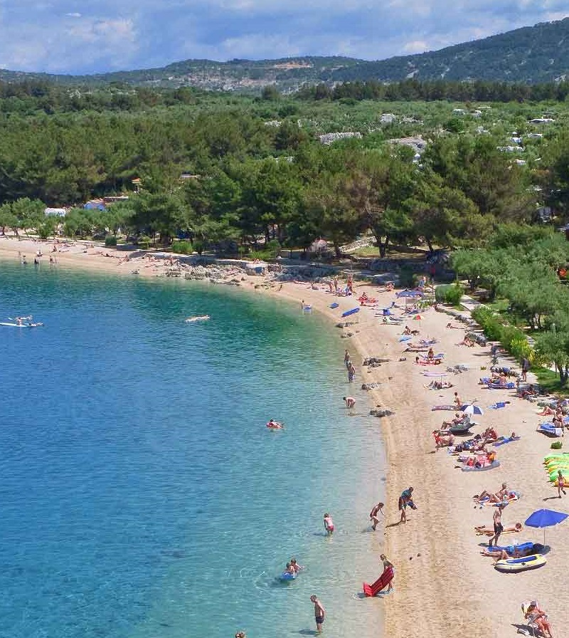

Erkunden Sie die Insel und ihre Umgebung
Viele Strände sind nur über schmale Pfade zu erreichen, die steil von den über dem Meer gelegenen Hängen absteigen. Die attraktivsten Strände sind sicherlich Sv. Blaž, Mali Bok, Plave grote und Luka (der Strand unterhalb von Lubenica). Entlang der gesamten Küste gibt es viele kleine, einsame Buchten, die nur von der Meerseite aus zu erreichen sind. Diese Buchten locken vor allem Abenteurer und Besucher an, die Ruhe und Erholung fernab vom Trubel, aber auch den Komfort größerer Badestellen suchen.
Eine der schönsten idyllischen Buchten umgeben von hohen Felsen. Hier verändert sich das Meer in vielen Blautönen und der Strand ist von unberührter Natur umgeben.
Der Strand liegt in Beli, direkt neben dem kleinen Hafen.
Es ist wunderschön dekoriert und mit großen Kieselsteinen und klarem Meer geschmückt.
Auf der einen Seite hat der Strand Kontakt mit den Felsen, auf der anderen
Der ummauerte Teil des Hafens setzt sich auf der anderen Seite fort.
In unmittelbarer Nähe der Bucht von Žanje gibt es eine wunderschöne
Kiesstrand – einer der schönsten einsamen Strände
in der Welt. Das deutsche Magazin Bild belegte den 15. Platz.
einen Platz im Wettbewerb der 40 schönsten Strände der Welt.
Plava Grota liegt in der Bucht von Žanje,
am Fuße von Lubenica auf der Insel Cres.
Plava Grota ist eine Meereshöhle am Rande
Strände im Felsen.
Man kann die Höhle schwimmend betreten, sie ist etwa 20 Meter lang und in ihr
Im Landesinneren gibt es einen kleinen Kiesstrand.

Am nördlichen Ausgang von Cres gibt es ein wunderschönes
Der Strand von Kovačine hat eine vielfältige Konfiguration,
von Betonplateaus bis hin zu fein gesprenkeltem Sand
Felsen, die aus der Tiefe auftauchen. Es gibt auch einen FKK-Strandabschnitt.
Der Strand Sv.Blaž liegt am nördlichen Teil der Küste der Insel Cres.
Der Strand ist über Land und Meer erreichbar.
Die örtliche Straße, die Sie zum Strand führt, führt von Cres aus.
Der Strand ist wegen der Felsen und der Aussicht auf Istrien etwas Besonderes.
Es ist großartig für Naturliebhaber.
Valun ist ein kleines Küstendorf, in dem sie ansässig sind
zwei wunderschöne Kiesstrände. Der Strand in der Bucht von Racija
gekennzeichnet durch den umliegenden dichten Pinienwald, einen wunderschönen Strand
und kristallklares Meer. Der Ort hat alles, was Sie brauchen
für einen angenehmen ganztägigen Aufenthalt am Strand.
Der Strand Buc liegt am westlichen Teil der Küste der Insel Cres.
Es liegt außerhalb des Dorfes, in der Nähe von Valun. Der Strand ist auf dem Landweg und erreichbar
Natürlich auf dem Seeweg, es empfiehlt sich, ein Boot oder ein Taxiboot zu mieten.
Es ist großartig für Leute, die lieben
Ruhe und Frieden.
Der Strand von Nedomišje ist definitiv eine der schönsten Buchten auf Cres.
Das Meer ist kristallklar und der Strand ist von natürlicher Schönheit umgeben
unberührte Natur.
Am Strand gibt es keinen Schatten, bringen Sie also einen Sonnenschirm mit oder suchen Sie am 20. nach Schatten
m vom Strand entfernt im Olivenhain.
Inseln vom Meer aus zu erkunden und zu entdecken, ist ein besonderes Erlebnis. Wahrer Respekt inspiriert
eine Szene, die aufgrund ihres verspielten Reliefs und ihrer Größe den steilen Aufstieg von Felsen über das Meer zeigt.
Es fungiert als Wächter und schützt die Kvarner-Bucht vor Eindringlingen. Hier wird seine Festigkeit gemildert
grüne Hänge und wunderschöne Kiesstrände, die Besucher in ihre Buchten einladen
kristallklares Meer.
Bootsfahrer finden im modernen Yachthafen in der Bucht von Cres alles, was sie zum unbeschwerten Segeln benötigen.
Genießen Sie den Charme der Insel. Dort finden Sie auch bei stärkstem Wind Schutz.
Die lange Küste der Insel, reich an zahlreichen Buchten und Stränden, und das Segeln zwischen den nahegelegenen kleineren Inseln ermöglichen ein intimes Erlebnis des Meeres.